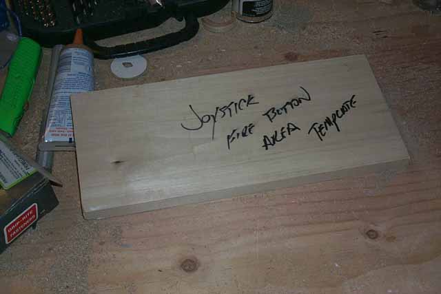

All righty then.... for the black controller area laminate I took some spare 1x6 lying around and cut it 1 ft long, this would be my template for cutting a piece of the black laminate for two control area pieces. After which I'll file the edges with nice round corners for a more finished look and glue that down later.... Why so long? Well, as they say "size matters" :-) errrr, ahem.... okay, the reason is that what your not seeing is a spot on the other side of the joystick area for a future keypad to be installed. What I'd like to use are a pair of Champ Keypads, tough to find, so for now the spots will stay vacant until a pair of the buggers shows up or an alternative is found. Anyone with some good ideas that look along the lines of the OEM coleco controllers, send me a mail to: The Kiosk Lunatic (aka... me :-)

So, while I let the laminate cure on the pedestal assembly, lets get to work on some of the hardware and get started on putting this beastie together so its not just a collection of parts laying around my basement pissing my wife off cause she can't get into the laundry room (As she likes to say "Get your Atari game-thingie kiosk outta my way or I'll make laundry tables out of it all!!!" {Fortunately, she says it with a smile, so I know she wouldn't do that.... I hope}
Lets start at the base and work our way up. Line up the bottom base to and place the side panels onto the floor backside on the floor, using a 1/2" drill bit I went through the side panel and into the 2x4 of the base. This will be for the bolt to pass through. A company called HM sells assembly products. In the Nuts/Bolts/Hardware aisle of Home Depot you will find an assortment of cabinet assembly products, among them are the HM line of pieces.
On the inside of the base fine where the 1/2" drill came through. Using a 5/8" speed bit, drill out the 1/2" hole and go in about 3/4" depth. What your doing is making a counter-sink hole for another piece of HM hardware. I suggest using this hardware, we are talking about a big piece of furniture here once assembled, its heavy and you want it to be durable, so don't take the easy route and just screw in 3" screws or something else, this will NOT give you the strength your project needs and will end up causing you grief later on. Use this assembly hardware, you'll thank yourself later for taking the few extra minutes.